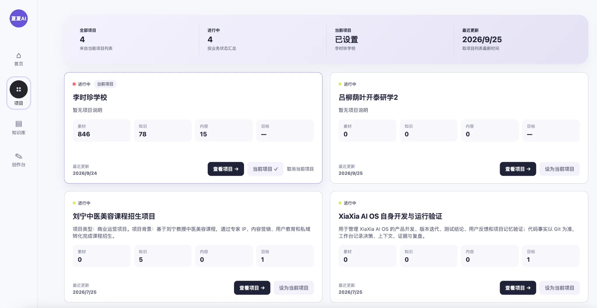
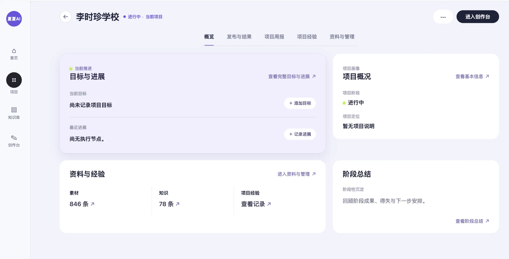
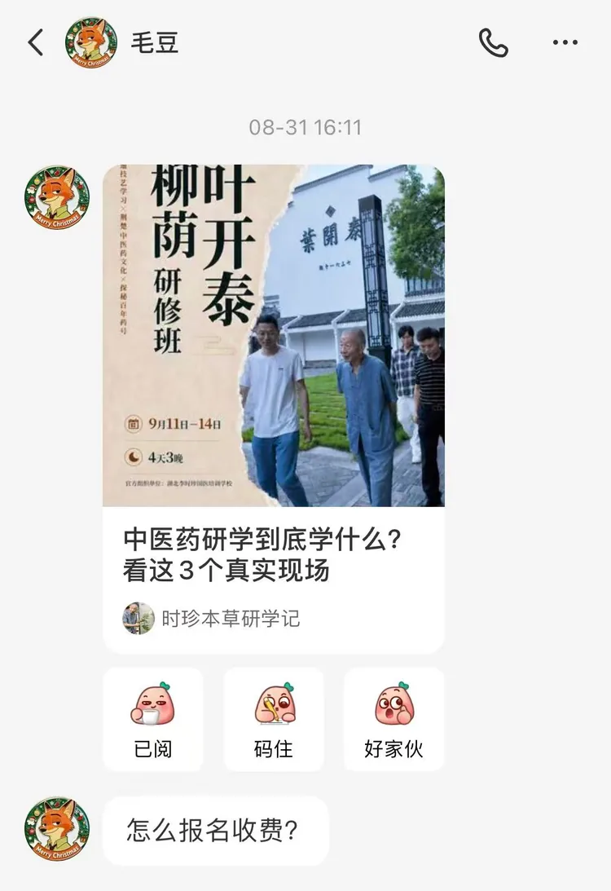

项目知识库
集中管理业务资料、内容资产、素材资产、案例、方法和历史经验，让 AI 能持续理解项目。
AI PRODUCT / 0→1 PRODUCT PRACTICE
把内容获客经验、业务资料和 AI 工作流结合起来，让没有专业内容团队的一人公司和小企业，也能建立可持续使用的内容运营流程。

问题发现
很多一人公司和小企业知道需要通过小红书、公众号和朋友圈介绍自己的业务，却没有专业内容团队。即使直接使用通用 AI，他们仍然要自己判断目标客户是谁、写什么、引用哪些业务事实、图片怎么做、不同平台怎么表达，以及发布后下一轮该如何调整。
产品定位
产品本身由“项目知识库 + AI 工作台”组成：先把客户真实业务资料、内容、素材和经验留在项目里，再用于日常选题与创作。首次进入客户业务时，通过“项目搭建 + 共创陪跑”把这套产品真正用起来。
集中管理业务资料、内容资产、素材资产、案例、方法和历史经验，让 AI 能持续理解项目。
基于项目知识完成选题、创作、排版、多渠道版本和反馈记录。
首次合作时梳理业务、整理资料与素材，并配置品牌和内容规则。
一起跑完首轮内容，根据实际结果调整，再逐步交给客户日常使用。
目标用户与 MVP
希望通过内容获得潜在客户，愿意提供真实业务资料，并能持续审核和发布内容。
以小红书图文为主，公众号和朋友圈用于延展；先跑通完整闭环，再扩大自动化范围。
首期成功标准不是“生成了多少篇内容”，而是客户能完成一次从选题、创作、审核、发布记录到反馈与下一轮调整的完整循环，并理解每篇内容在获客目标中的作用。
产品工作流
围绕一个真实业务项目，把战略判断、项目知识、内容生产和结果反馈串成同一条可追溯链路。
产品结构
每个项目拥有自己的业务事实、资料、品牌标准和经验，避免不同客户的内容与上下文混用。

目标、人物、资料、知识、阶段信息和项目经验持续沉淀，让创作不再从一段空白对话开始。

围绕同一个主题和业务目标，在多渠道创作任务中修改、确认内容，并完成公众号文章编辑与预览。
真实业务验证
上方展示了李时珍学校研修项目在工作台内的内容编辑与预览。完成后，内容发布到小红书、公众号等渠道，并带来真实用户咨询。
生成内容已用于小红书、公众号等真实渠道，不停留在内部演示。
用户看到内容后主动询问报名与收费，内容开始进入真实获客场景。
“怎么报名收费？”
目前已经跑通从内容生产、实际发布到用户咨询的第一轮闭环。
商业交付
产品本身是“项目知识库 + AI 工作台”；首期交付采用“项目搭建 + 1—2 个月共创陪跑”。先用真实客户项目验证哪些环节可以标准化、哪些仍需要人工服务，再决定后续产品化与自动化程度。
梳理业务目标、目标客户、内容问题与现有账号。
配置项目知识、选题来源、渠道规则和项目视觉标准。
规划小红书内容组合，并延展公众号与朋友圈版本。
根据真实反馈调整方法和模板，并培训客户完成日常操作。
当前不承诺固定流量、咨询量或成交额；新增平台接口、长期代运营和全新定制功能不自动包含在首期搭建服务中。
当前阶段
项目、知识与经验、多渠道内容、图文与公众号排版、发布与反馈记录已有基础能力。
统一 V2 体验、选题候选库、获客内容矩阵、项目标准默认应用和端到端验收。
先完成内部样板，再进行外部付费试点；随后评估选题自动化和自动剪辑。
当前处于产品闭环完善与外部付费试点准备阶段。页面展示的是已存在的工作台基础和明确的目标产品方案，不把尚未完成的自动化能力包装为已上线功能。
我的工作
这个项目来自我长期做内容增长时遇到的真实问题。我既负责业务问题和产品边界判断，也借助 AI 编程工具与开发协作持续实现，并把每一轮产品判断放回真实项目验证。
从个人内容效率问题，逐步重新定义为一人公司与小企业的内容获客问题。
产品定位、目标用户、首期范围、PRD、优先级和验收标准。
项目建档、选题、矩阵、创作、多渠道、审核和反馈闭环。
项目上下文、知识调用、人工审核、经验沉淀和多渠道生成。
使用 Codex 等 AI 编程工具推进原型、实现、调试和持续迭代。
设计“项目知识库 + AI 工作台”的产品结构，以及“项目搭建 + 共创陪跑”的首期交付方式。